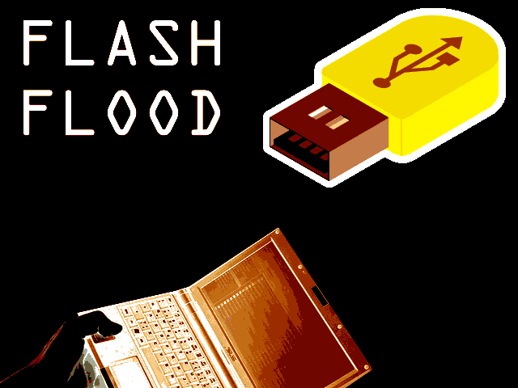
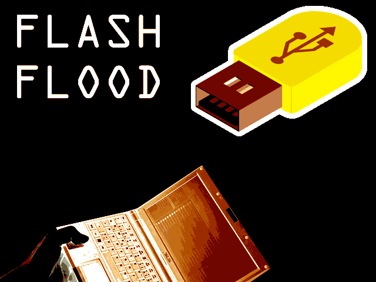

Flash Fl00d
role: CuratorFLASH FL00D is a semi-secretive mass public exhibition of rapidly-distributed hidden flash drives containing downloadable exhibitions. Curatorial members of Little Berlin along with other Philadelphia galleries, collectives, artists, hackers and members of the public were invited to embed USB flash drives known as‘dead drops’ in public locations such as walls, phone booths and staircases. Individual exhibitions of artworks were placed on usb drives and distributed around the city. In addition to the exhibition, workshops, talks, performances and BYOBeamer events were held at the gallery. The opening featured an evening of projection of analog moving images, data visuals, motion graphics, motion capture, video and music.
Little Glitches was a salon night, with performance, talks and videos. Participants included JD of Fauxtronics showing circuit bent video and handmade modular synthesizers (using repurposed electronic CMOS parts), artist John Dingler’s moviettes, a discussion of glitches within collective consciousness by Joshua Becker, performance art concerning McDonalds and Teletubbies by The Great Quentini, video and projector hacking by Jason Hsu, and moving gifs and a virtual reality game by Patrick Quinn and Alfredo Salazar-Caro, as well as a discussion of Mayan New Media && Dither Doom.
Links: Knight Arts Geekadelphia Flying Kite Media SmartTV - Korea 
